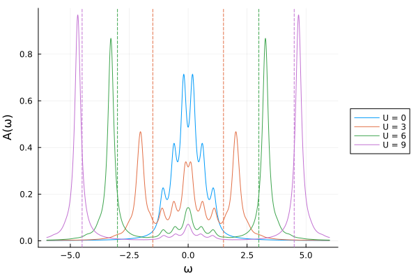

Anderson impurity: Green's function between sectors
We compute the impurity spectral function of a single-impurity Anderson model by exact diagonalization. The Green's function connects the ground state with states that have one particle more or one particle fewer, so it needs the creation and annihilation operators as maps between particle-number sectors. representation(op, Axes(Hout, Hin)) gives these rectangular matrices directly.
using FermionicHilbertSpaces, LinearAlgebra, Plotsusing FermionicHilbertSpaces: AxesThe impurity is site 0. It couples with strength V to L bath sites with energies ε. Writing the interaction as U(n↑ - 1/2)(n↓ - 1/2) makes the model particle-hole symmetric.
@fermions cL = 5ε = range(-1, 1; length=L)V = 0.25n(i, σ) = c[i, σ]' * c[i, σ]spins = (:↑, :↓)siam(U) = U * (n(0, :↑) - 1 / 2) * (n(0, :↓) - 1 / 2) + sum(ε[k] * n(k, σ) for k in 1:L, σ in spins) + sum(V * c[0, σ]' * c[k, σ] + hc for k in 1:L, σ in spins)siam (generic function with 1 method)The numbers of spin-up and spin-down particles are conserved separately, so we split the space into sectors labelled by [N↑, N↓].
Hup = hilbert_space(c, [(i, :↑) for i in 0:L])Hdn = hilbert_space(c, [(i, :↓) for i in 0:L])H = constrain_space(tensor_product(Hup, Hdn), NumberConservation(Hup) * NumberConservation(Hdn))4096-dimensional SectorHilbertSpace
Parent: c[(0, :↑), (1, :↑), ..., (4, :↓), (5, :↓)]
Sectors: 49 total [[0, 0] (1-dim), ..., [6, 6] (1-dim)]The half-filled ground state |0⟩ lies in the sector q0 with equally many spin-up and spin-down particles. Creating a spin-up particle on the impurity leads to the sector with one more spin-up particle, and annihilating one leads to the sector with one fewer. The Green's function is a sum of poles over the eigenstates |m⟩ of these two sectors,
\[G(z) = \sum_m \frac{|⟨m|d^†_↑|0⟩|^2}{z - (E_m - E_0)} + \sum_m \frac{|⟨m|d_↑|0⟩|^2}{z + (E_m - E_0)}.\]
function lehmann(ham, H, q0) eig(q) = eigen(Hermitian(representation(ham, sector(q, H), :dense))) H0, Hp, Hm = sector(q0, H), sector(q0 + [1, 0], H), sector(q0 - [1, 0], H) E0s, V0s = eig(q0) E0, ψ0 = E0s[1], V0s[:, 1] Ep, Vp = eig(q0 + [1, 0]) Em, Vm = eig(q0 - [1, 0]) wp = abs2.(Vp' * (representation(c[0, :↑]', Axes(Hp, H0)) * ψ0)) wm = abs2.(Vm' * (representation(c[0, :↑], Axes(Hm, H0)) * ψ0)) (; poles=[Ep .- E0; E0 .- Em], weights=[wp; wm])endG(z, (; poles, weights)) = sum(weights ./ (z .- poles))q0 = [L + 1, L + 1] .÷ 22-element Vector{Int64}:
3
3Without interaction, the impurity Green's function is known in closed form, and the Lehmann sum reproduces it.
G0(z) = 1 / (z - sum(V^2 ./ (z .- ε)))zs = range(-3, 3; length=101) .+ 0.1imG.(zs, Ref(lehmann(siam(0), H, q0))) ≈ G0.(zs)trueFor any interaction strength, the weights add up to one, as required by {d↑, d↑†} = 1.
sum(lehmann(siam(6), H, q0).weights) ≈ 1trueThe spectral function is A(ω) = -Im G(ω + iη)/π, here with a small broadening η. Without interaction, the impurity level spreads over the bath energies around zero. With interaction, the weight moves into two Hubbard peaks. They sit just outside ±U/2 (dashed lines) and approach these lines as U grows, while the peak at zero energy shrinks.
ωs = range(-6, 6; length=1201)η = 0.15plt = plot(; xlabel="ω", ylabel="A(ω)", legend=:outerright)for (i, U) in enumerate((0, 3, 6, 9)) sol = lehmann(siam(U), H, q0) plot!(plt, ωs, [-imag(G(ω + im * η, sol)) / π for ω in ωs]; label="U = $U", color=i) U > 0 && vline!(plt, [-U / 2, U / 2]; label="", color=i, linestyle=:dash)endplt
This page was generated using Literate.jl.